Instalación de Certificado Generado
Tipos de formatos más frecuentes de certificados
.CSR (Certificate Signing Request): Sería el archivo generado normalmente por el
servidor que usará el certificado SSL. El CSR contiene información relativa a la
organización.
.KEY: Es el archivo de clave de privada para cifrar las solicitudes.
.DER (Distinguish Encoding Rules): Suelen tener la extensión CRT o
CER. Es un tipo de codificación de certificados X.509, NO un tipo de certificado.
Es un formato binario o raw.
.CRT .CERT .CER .PEM (Privacy Enhanced Mail): Ambos son usados indistintamente.
.pem contiene el certificado y la clave, mientras que un fichero .crt solo contiene
el certificado.
.CRL (Certificate Revocation List): Fichero que contiene una lista de recovación
de certificados.
.P7B .P7C: Estructura PKCS#7 SignedData sin datos, solo certificado(s) o CRL(s).
.PKCS12 (PKCS #12) .P12 .PFX: Se usa en servidores Windows. Cotiene todos los
archivos en un único archivo, tanto la clave pública como la clave privada asociada,
generada por el servidor en el momento en el que se generó el CSR.
Si necesitamos extraer la clave privada podemos usar OpenSSL el cual utilizará uno de los
estándares de criptografía PKCS (Public-Key Cryptography Standards) concretamente
PKCS#12 (formatos .PFX) que define un formato de fichero usado comúnmente para almacenar
claves privadas con su certificado de clave pública protegido mediante clave simétrica
(es decir, una passphrase o contraseña).
Exportamos el certificado autofirmado del servidor IIS. Estará en formato PKCS#12
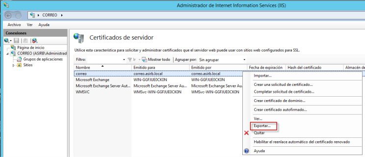
Exportando certificado desde certmgr.msc
Podemos exportar dicho certificado del propio equipo local a través de la consola de Microsoft
para la administración de certificados certmgr.msc. Agregar administrador de certificados a
través de un MMC. En el asistente de exportación nos permite la opción de incluir la clave
privada en el certificado.
Descargar OpenSSL para Windows: A través de una CLI de Windows Server ejecutamos OpenSSL con
PKCS12 para la obtención de la clave privada del certificado. Tendremos que extraer el
certificado (clave pública), la clave privada (nos pedirá la contraseña en ambos casos) y finalmente
eliminar el passphrase de la clave privada extraída.
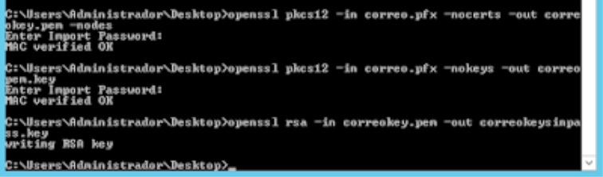
Usando OpenSSL para la extracción de certificados.
Extraer la clave pública del certificado .pfx
openssl pkcs12 -in certificado.pfx -out
clavepublica.pem -nokeys
- certificado.pfx : Certificado pfx del servidor.
- clavepublica.pem : Clave pública. (También se podría exportar a un formato de salida .crt o .cer).
- -nokeys: Separará la clave pública de la clave privada del certificado .pfx.
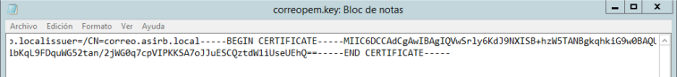
Fichero de salida de la clave pública.
Extraer la clave pública del certificado .pfx
openssl pkcs12 -in certificado.pfx -out
claveprivada.pem -nocerts -nodes
certificado.pfx: Certificado pfx del servidor.
claveprivada.pem: Clave privada. (También se podría exportar a un formato de salida .crt o .cer).
-nocerts: Separará la clave privada de la clave pública del certificado .pfx.
-nodes: No cifra la salida de la clave privada (quedando visible en texto plano).
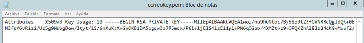
Con esto finalmente tendremos la clave privada sin contraseña para poder utilizarla en lo que nos sea necesario.
Convertir certificados CRT, CRT (CA) y clave privada .key a un solo archivo PFX
En el caso de tener el archivo .crt del certificado en sí, el archivo .crt de la CA y el archivo de la clave
privada en un .key. Para poder fusionar estos tres ficheros en un solo fichero .pfx (PKCS #12 por lo general,
usado en sistemas Windows).
openssl pkcs12 -export -out certificate.pfx -inkey rsaprivate.key -in
certificate.crt -certfile fileca.crt
certificate.pfx: Certificado de salida en formato pfx.
rsaprivate.key: La clave privada.
certificate.crt: La clave pública.
fileca.crt: Fichero de autoridad de la entidad de certificadora (CA)
Instalar certificado en postman
luego de tener los certificados .pfx y .crt podemos instalarlo en postman, de la siguiente manera:
Ejecutamos Postman
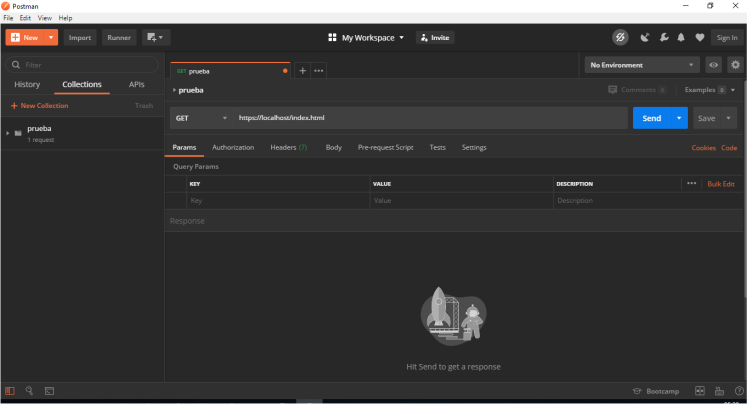
Nos dirigimos al ícomo de la llave inglesa
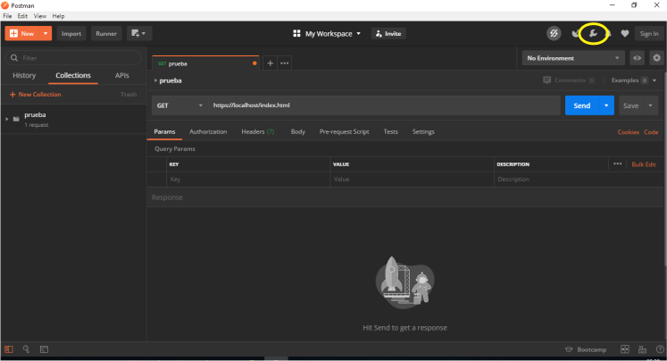
Desplegamos clickeamos en Settings
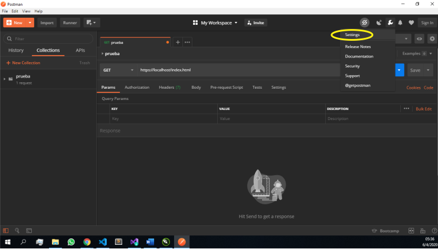
En este cuadro que nos aparece clickeamos en Certificates
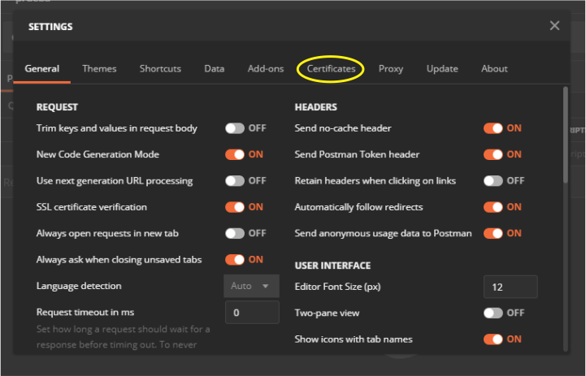
Abierta la opción de certificates hacemos click en Add Certificate
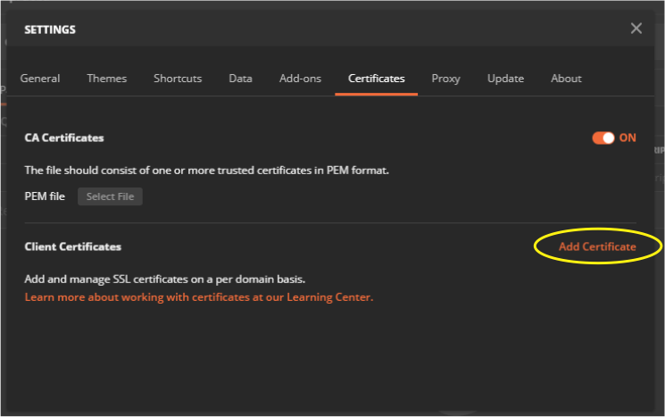
En este nuevo cuadro nos muestra varios campos a completar.
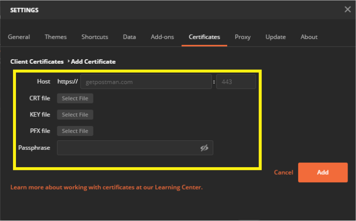
Host: colocamos el localhost en nuestro caso será http://localhost:5500/index.html.
CRT file: al ingresar en esta opción se desplegará un cuadro dónde deberemos buscar el archivo crt creado.
seleccionamos el certificado y clickeamos en Abrir.
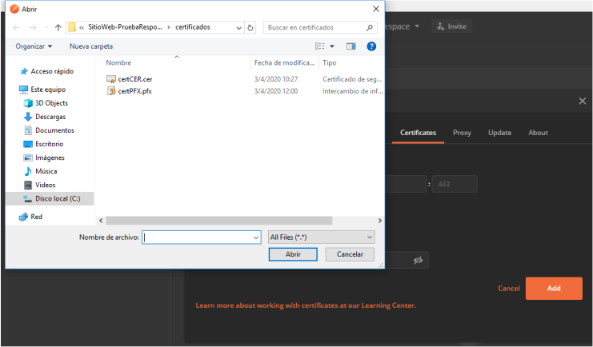
KEY file: esta opción solo se completará en el caso de que el certificado sea de una CA pagado.
PFX file: similar al caso del certificado crt solo que ahora seleccionaremos el archivo .pfx y Abrir.
Passphrase: colocamos el mismo password que al momento de crear los certificados.
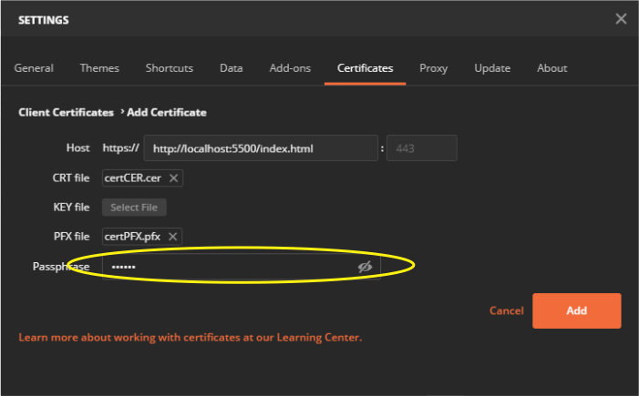
Add: por último clickeamos en add.
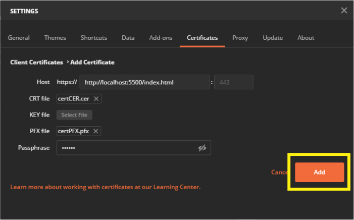